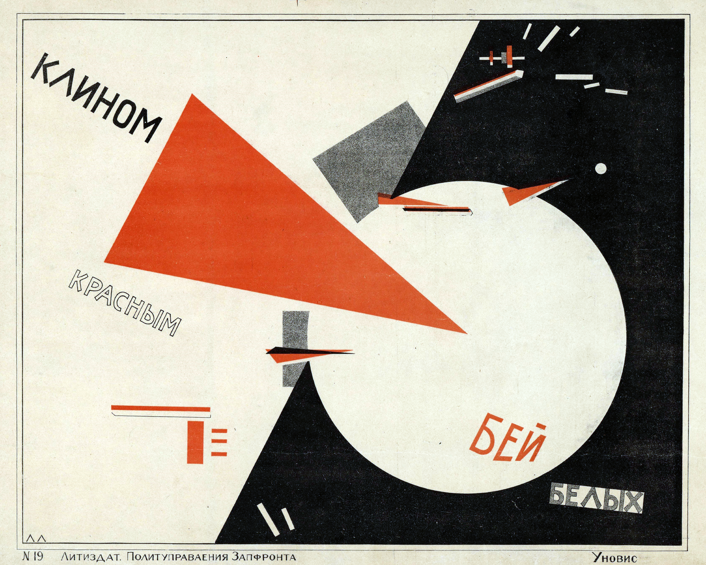

Early Modernism & the Avant-Garde
From Cubism and Futurism to Constructivism, Dada, and Surrealism — the generation that broke the visual rules of the nineteenth century and built the vocabulary of modern design.
Historical Context

An avant-garde, not a style. Early Modernism isn't a single look — it's a generation of overlapping movements that all, in different ways, refused the inherited assumption that a picture should depict a scene, a sculpture should depict a person, or a building should wear ornament borrowed from the past.
Between 1907 and 1930, Picasso shattered the picture plane into facets; Marinetti declared a museum equal to a cemetery; Tatlin welded steel into spiraling unbuilt monuments; Duchamp submitted a urinal to an art exhibition; Malevich painted a black square and called it zero; Rodchenko built graphic design into a political tool. These moves were not isolated gestures. They were the intellectual raw material the Bauhaus, the International Typographic Style, and most of twentieth-century design would draw from.
What unites them is a shared appetite for abstraction, fragmentation, and provocation — and a shared conviction that the work should look like the century it was made in.
Key Ideas
Click each card to reveal an example
Picasso and Braque's Analytic Cubism (1909–1912) dissolved a single object into overlapping, tilted planes that refuse to resolve into a coherent view — forcing the eye to assemble the image over time.
Malevich's Black Square (1915). A flat black square on a white field. Malevich called it “the zero of form” — the point at which painting stops being a picture of something else and becomes an object in its own right.
The Italian Futurists celebrated speed, machines, and the modern city. Marinetti's 1909 Manifesto of Futurism declared that a racing car was more beautiful than the Winged Victory of Samothrace.
Russian Constructivism after 1917: Rodchenko, Lissitzky, and Stepanova treated graphic design, textiles, and furniture as tools for building a socialist society. Ornament was bourgeois; structure was revolutionary.
Duchamp's Fountain (1917) — a porcelain urinal signed “R. Mutt” and submitted to an exhibition. The readymade insisted that the artist's decision, not the artist's hand, was what made something art.
Hannah Höch's Dada photomontages (Berlin, 1919–1920) cut apart newspapers and magazines and reassembled them into ferociously political images. The technique became a foundation of twentieth-century graphic design.
De Stijl (1917–1931) reduced painting, furniture, and architecture to horizontal and vertical lines and the primary colors red, yellow, blue plus black, white, and grey. Mondrian's grids and Rietveld's Red and Blue Chair are its clearest statements.
Meret Oppenheim's Object (Le Déjeuner en fourrure) (1936) — a teacup, saucer, and spoon covered in gazelle fur. Surrealism took ordinary things and made them strange by combining them in ways a dream might.
Historical Timeline
Key moments of the avant-garde
Early Modernism is often described as a series of “breaks” with the past. But each movement also built on the previous one. What's an example of a later movement borrowing directly from an earlier one it claimed to oppose?
Iconic Works
Early Modernism produced a remarkable density of landmark works in a short period. Below are eight that together sketch the full range of the avant-garde: paintings, sculptures, architecture, a readymade, a manifesto in typographic form, a piece of furniture, a photomontage, and an unbuilt tower.
Key People
Early Modernism was driven by a relatively small international network of artists who knew each other, argued with each other, and moved fluidly between cities, media, and movements. Below are twelve figures whose work sits at the center of the period.
With Braque, invented Cubism in 1907–1912. Shifted painting from depicting a single view to assembling many. Later took Cubism into sculpture and collage, breaking the boundary between picture and object.
Picasso's equal partner in the invention of Cubism. Introduced collage into fine art in 1912 by pasting oilcloth into a painting — a small move that permanently blurred the line between picture-making and assembly.
Wrote the 1909 Manifesto of Futurism and the 1914 typographic book Zang Tumb Tumb — “words in freedom” exploding across the page in varying sizes, weights, and orientations. A direct ancestor of twentieth-century experimental typography.
Pushed abstraction to its limit with Black Square (1915). Taught at Vitebsk alongside Lissitzky and Chagall. His “zero of form” argument — that painting should stop being a picture of anything and become a self-sufficient object — is the conceptual floor under all later geometric abstraction.
Rejected easel painting in favor of “constructions” made from industrial materials: iron, glass, wood, wire. His unbuilt Monument to the Third International (1919–1920) collapsed sculpture, architecture, and political manifesto into a single spiraling tower.
The avant-garde's most tireless connector. His Proun compositions moved fluidly between painting, print, and room-sized installation. His exhibition designs and typography carried Constructivist ideas to Germany and directly shaped the Bauhaus, De Stijl, and modern graphic design.
Moved fluidly between painting, sculpture, photography, and graphic design. His Soviet posters, book covers, and advertisements — built on diagonal axes, strong primaries, and photomontage — are the template every later modern graphic designer inherits.
Invented the readymade: an ordinary manufactured object declared art by the artist's decision, with no alteration beyond selection. Fountain (1917) is the case study. More than any other single figure, Duchamp set up the argument conceptual art would spend the next century working through.
The only woman in the Berlin Dada circle. Cut images from mass-market magazines and reassembled them into politically ferocious photomontages. Her techniques became the vocabulary of twentieth-century graphic design, long after Dada itself was over.
Built assemblages from street garbage and trash he called “Merz.” His Hanover house became the Merzbau — a room-sized sculpture that grew for over a decade. Ran the journal Merz, which connected Dada, Constructivism, and De Stijl on the same pages.
Reduced painting to horizontal and vertical black lines on a white ground, filled with red, yellow, or blue rectangles. Spent decades refining this one vocabulary. His grids are one of the most quoted and imitated compositional systems in twentieth-century design.
A cabinetmaker who translated De Stijl's flat, primary-color vocabulary into three dimensions. The Red and Blue Chair (1923) and the Schröder House (1924) in Utrecht are the clearest demonstrations that a painting system could become a house.
The Movements
The early-modern avant-garde was not a single movement but an overlapping group of them, each with its own manifestos, its own cities, and its own quarrels. The seven below are the most important. Almost every designer working between 1910 and 1930 was touched by at least two of them.
Picasso and Braque broke objects into facets seen from multiple angles at once. Analytic Cubism (1909–12) dissolved form into near-monochrome planes; Synthetic Cubism (1912–) added collage and brighter color. The parent movement of almost everything that follows.
Marinetti's manifesto movement celebrated cars, aeroplanes, electricity, and the modern city. In painting it used Cubist fragmentation to depict motion; in typography it shattered the page with “words in freedom.” Its politics grew uglier with time, but its visual vocabulary shaped everything from graphic design to cinema.
Malevich's argument that a painting should stop being a picture of something and become a self-sufficient object. Simple geometric forms — squares, circles, crosses — arranged on white fields. The clearest theoretical statement of geometric abstraction anywhere in the period.
Art should be constructed from industrial materials using engineering logic, and should serve society. Tatlin, Rodchenko, Stepanova, and Lissitzky built graphic design, textiles, furniture, and architecture as tools for a new socialist world. Its DNA runs through the Bauhaus and the International Typographic Style.
A discipline more than a style. Horizontal and vertical lines, the primary colors red, yellow, blue, plus black, white, and grey. Mondrian's paintings, van Doesburg's essays, Rietveld's furniture, and the Schröder House were all worked out from the same austere vocabulary.
A revolt against the rationality that produced the First World War. Used absurdity, chance, readymades, sound poetry, and photomontage to attack the idea that art required skill, beauty, or even intention. Its subversive energy resurfaces whenever designers deliberately break the rules.
Where Dada used absurdity to destroy meaning, Surrealism used it to reveal hidden meaning. Breton, Dalí, Oppenheim, Ernst, and Magritte built dreamlike images and objects that treated the unconscious as a creative method. Shaped fashion, window display, advertising, and eventually film.
Not an avant-garde movement itself, but the school that absorbed the avant-garde and made it teachable. Lissitzky, Kandinsky, Klee, Moholy-Nagy, Albers, and others carried Cubism, Constructivism, De Stijl, and Suprematism into a curriculum that defined twentieth-century design education.
Several of these movements (Constructivism, De Stijl, the Bauhaus) believed design could change society. Do you think that belief survives in contemporary design practice? If so, where?
Match the Artist to Their Work
Click an artist on the left, then click their work on the right. Correct matches will lock in place.
Match the Movement to Its Core Idea
Click a movement on the left, then its core idea on the right.